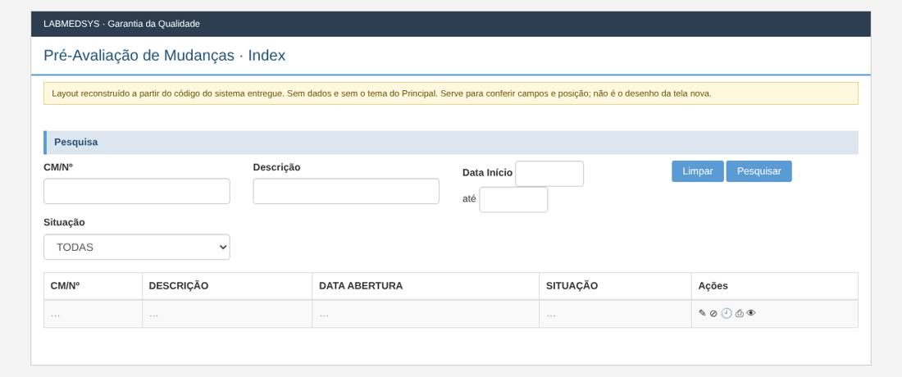
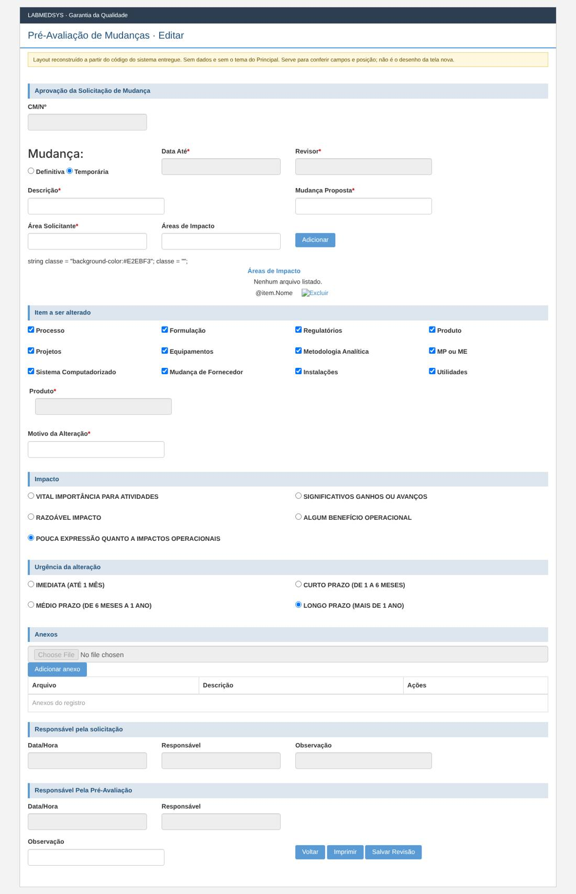
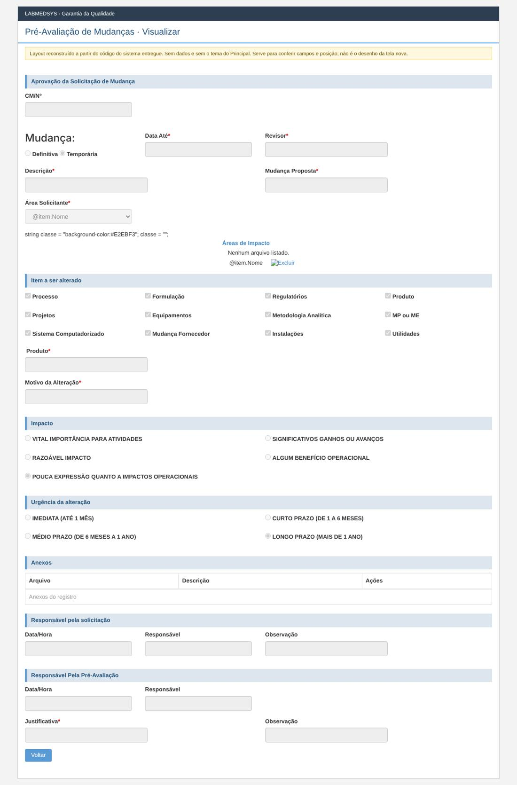

Menu: Garantia da Qualidade · Controle de Mudanças · Ficha: rascunho automático, a completar · Origem no sistema entregue: PreAvaliacaoMudanca
As telas novas seguem o processo e as regras do sistema entregue, sem transcrever o que for falha de código, de conceito ou de campo mal colocado. Cada decisão na ficha é Manter, Corrigir ou Ideal depois.
Como é a tela no sistema entregue (layout reconstruído)
Reconstruído a partir do código das páginas do sistema entregue: mostra os campos, os rótulos, os asteriscos de obrigatório e a posição. Não tem dados e não usa o tema do Principal; os prints reais estão logo abaixo. Opções marcadas por padrão (caixas e botões de opção) são do código, não de dados.
Lista

Editar

Visualizar

Levantamento no código (rascunho automático)
A ficha completa desta tela ainda não foi escrita. Abaixo está o levantamento automático feito no código do sistema entregue: páginas, rotas, campos, modelos, regras de validação do servidor, situações e mensagens.
Menu: Garantia da Qualidade › Controle de Mudanças › Pré-Avaliação de Mudanças
Origem no legado: área RM, controlador PreAvaliacaoMudancaController (HSolutions.GQ.UI/Areas/RM/Controllers/PreAvaliacaoMudancaController.cs)
Estado: rascunho automático do levantamento; a ficha completa fica em ../fichas/.
Este levantamento descreve o comportamento atual do sistema entregue, sem julgamento. A decisão do que manter, corrigir ou deixar para o ideal está na ficha completa.
1. Páginas da tela
| Página | Arquivo | Modelo |
|---|---|---|
| Editar | HSolutions.GQ.UI/Areas/RM/Views/PreAvaliacaoMudanca/Editar.cshtml | SolicitacaoMudancaSalvarModel |
| Imprimir | HSolutions.GQ.UI/Areas/RM/Views/PreAvaliacaoMudanca/Imprimir.cshtml | — |
| Index | HSolutions.GQ.UI/Areas/RM/Views/PreAvaliacaoMudanca/Index.cshtml | PreAvaliacaoMudancaIndexModel |
| Visualizar | HSolutions.GQ.UI/Areas/RM/Views/PreAvaliacaoMudanca/Visualizar.cshtml | SolicitacaoMudancaSalvarModel |
Partials usados: HSolutions.GQ.UI/Areas/RM/Views/SolicitacaoMudanca/_GridAreasImpacto.cshtml, HSolutions.GQ.UI/Views/Shared/_UploadArquivo.cshtml, HSolutions.GQ.UI/Views/Shared/_GridAnexos.cshtml, HSolutions.GQ.UI/Views/Shared/_Log.cshtml
2. Ações do controlador (rotas)
| Ação | Retorno | Parâmetros | Atributos | Linha |
|---|---|---|---|---|
| Index | ActionResult | 43 | ||
| Pesquisar | JsonResult | DateTime? dataInicio, DateTime? dataFim, int? indice, string cmn, string descricao, int situacao | HttpPost | 52 |
| Visualizar | ActionResult | int id | 187 | |
| SalvarPreAvaliacao | JsonResult | PreAvaliacaoSalvarModel model, string justificativa | HttpPost | 234 |
| SalvarAreasResponsaveis | JsonResult | SalvarAreasResponsaveisAvaliacaoModel model, string justificativa | HttpPost | 443 |
| Imprimir | ActionResult | int id | 594 | |
| ListarResponsaveisPorArea | JsonResult | int idArea | HttpPost | 620 |
3. Campos, colunas e botões
Editar (HSolutions.GQ.UI/Areas/RM/Views/PreAvaliacaoMudanca/Editar.cshtml)
Títulos e seções: Mudança: (:65)
Rótulos: CM/Nº (:56); Definitiva (:71); Temporária (:77); Data Até * (:83); Revisor * (:89); Descrição * (:98); Mudança Proposta * (:102); Área Solicitante * (:110); Áreas de Impacto (:115);   (:121); Processo (:157); Formulação (:168); Regulatórios (:179); Produto (:190); Projetos (:201); Equipamentos (:212); Metodologia Analítica (:223); MP ou ME (:234); Sistema Computadorizado (:245); Mudança de Fornecedor (:256); Instalações (:267); Utilidades (:278); Produto * (:284); Motivo da Alteração * (:312); VITAL IMPORTÂNCIA PARA ATIVIDADES (:336); SIGNIFICATIVOS GANHOS OU AVANÇOS (:346); RAZOÁVEL IMPACTO (:355); ALGUM BENEFÍCIO OPERACIONAL (:364); POUCA EXPRESSÃO QUANTO A IMPACTOS OPERACIONAIS (:373); IMEDIATA (ATÉ 1 MÊS) (:397); CURTO PRAZO (DE 1 A 6 MESES) (:407); MÉDIO PRAZO (DE 6 MESES A 1 ANO) (:416); LONGO PRAZO (MAIS DE 1 ANO) (:425); Data/Hora (:465); Responsável (:470); Observação (:474); Data/Hora (:493); Responsável (:498); Justificativa (:506); Observação (:510); Área * (:550); Responsável * (:555);   (:561)
| Tipo | Campo | Linha |
|---|---|---|
| input:hidden | hfId | 42 |
| input:hidden | hfTipoPreAvaliacao | 43 |
| input:hidden | hfEstaAprovadoEmPreAvaliacao | 44 |
| input:text | txtCMN | 57 |
| input:text | txtDataValidade | 84 |
| input:text | txtRevisor | 90 |
| input:hidden | IdRevisor | 91 |
| input:text | txtDescricao | 99 |
| input:text | txtMudancaProposta | 103 |
| input:text | txtAreaSolicitante | 111 |
| input:hidden | IdAreaSolicitante | 112 |
| input:text | txtAreaImpacto | 116 |
| input:hidden | IdAreaImpacto | 117 |
| input:button | btnAdicionarAreaImpacto | 123 |
| input:text | txtProduto | 292 |
| input:button | btnGetProduct | 295 |
| input:text | txtProduto | 301 |
| input:button | btnGetProduct | 304 |
| input:text | txtMotivoAlteracao | 313 |
| input:text | txtDataHora | 466 |
| input:text | txtResponsavel | 471 |
| input:text | txtObservacao | 475 |
| input:text | txtDataPreAvaliacao | 494 |
| input:text | txtJustificativaPreAvaliacao | 507 |
| input:text | txtObservacaoPreAvaliacao | 511 |
| input:text | txtAreaEnvolvidasAvaliacao | 551 |
| input:hidden | IdAreaEnvolvidasAvaliacao | 552 |
| select | cboResponsavelAvaliacao | 556 |
| input:button | btnFecharModal_log | 622 |
Botões e atalhos: Adicionar (:123); buscar (:295); buscar (:304); Voltar (:519); Imprimir (:520); Salvar Revisão (:521); Adicionar (:562); Limpar (:563); Voltar (:605); Reprovar (:607); Salvar revisão (:608); FECHAR (:622)
Index (HSolutions.GQ.UI/Areas/RM/Views/PreAvaliacaoMudanca/Index.cshtml)
Rótulos: CM/Nº (:26); Descrição (:31); Data Início (:36); Situação (:55)
| Tipo | Campo | Linha |
|---|---|---|
| input:text | txtCMN | 27 |
| input:text | txtDescricao | 32 |
| input:text | txtDataInicio | 38 |
| input:text | txtDataFim | 42 |
| select | cboSituacao | 56 |
Botões e atalhos: Limpar (:47); Pesquisar (:48)
Visualizar (HSolutions.GQ.UI/Areas/RM/Views/PreAvaliacaoMudanca/Visualizar.cshtml)
Títulos e seções: Mudança: (:51)
Rótulos: CM/Nº (:42); Definitiva (:57); Temporária (:63); Data Até * (:69); Revisor * (:75); Descrição * (:84); Mudança Proposta * (:88); Área Solicitante * (:96); Processo (:141); Formulação (:152); Regulatórios (:163); Produto (:174); Projetos (:185); Equipamentos (:196); Metodologia Analítica (:207); MP ou ME (:218); Sistema Computadorizado (:229); Mudança Fornecedor (:240); Instalações (:251); Utilidades (:262); Produto * (:268); Motivo da Alteração * (:279); VITAL IMPORTÂNCIA PARA ATIVIDADES (:302); SIGNIFICATIVOS GANHOS OU AVANÇOS (:312); RAZOÁVEL IMPACTO (:321); ALGUM BENEFÍCIO OPERACIONAL (:330); POUCA EXPRESSÃO QUANTO A IMPACTOS OPERACIONAIS (:339); IMEDIATA (ATÉ 1 MÊS) (:364); CURTO PRAZO (DE 1 A 6 MESES) (:374); MÉDIO PRAZO (DE 6 MESES A 1 ANO) (:383); LONGO PRAZO (MAIS DE 1 ANO) (:392); Data/Hora (:427); Responsável (:432); Observação (:436); Data/Hora (:455); Responsável (:460); Justificativa * (:468); Observação (:472)
| Tipo | Campo | Linha |
|---|---|---|
| input:hidden | hfId | 29 |
| input:hidden | hfTipoPreAvaliacao | 30 |
| input:hidden | hfEstaAprovadoEmPreAvaliacao | 31 |
| input:text | txtCMN | 43 |
| input:text | txtDataValidade | 70 |
| input:text | txtRevisor | 76 |
| input:hidden | IdRevisor | 77 |
| input:text | txtDescricao | 85 |
| input:text | txtMudancaProposta | 89 |
| select | cboAreaSolicitante | 97 |
| input:text | txtProduto | 273 |
| input:text | txtMotivoAlteracao | 280 |
| input:text | txtDataHora | 428 |
| input:text | txtResponsavel | 433 |
| input:text | txtObservacao | 437 |
| input:text | txtJustificativaPreAvaliacao | 469 |
| input:text | txtObservacaoPreAvaliacao | 473 |
| input:button | btnFecharModal_log | 553 |
Botões e atalhos: Voltar (:540); FECHAR (:553)
_UploadArquivo (HSolutions.GQ.UI/Views/Shared/_UploadArquivo.cshtml)
Rótulos: Arquivo (:75); Descrição (:81); Status (:99); Observação (:112)
| Tipo | Campo | Linha |
|---|---|---|
| input:hidden | hdnArquivoId | 67 |
| input:file | txtArquivo | 76 |
| input:text | txtDescricaoArquivo | 82 |
| select | StatusMonitoramento | 100 |
| textarea | txtObservacao | 113 |
Botões e atalhos: Enviar (:87)
_Log (HSolutions.GQ.UI/Views/Shared/_Log.cshtml)
Botões e atalhos: FECHAR (:7)
4. Modelos de dados da tela
GridModel (HSolutions.GQ.UI/Models/GridModel.cs)
| Tipo | Propriedade | Validação | Linha |
|---|---|---|---|
| IEnumerable |
Source | 14 | |
| PaginacaoGridModel | Paginacao | 16 |
PreAvaliacaoMudancaIndexModel (HSolutions.GQ.UI/Areas/RM/Models/PreAvaliacaoMudancaIndexModel.cs)
| Tipo | Propriedade | Validação | Linha |
|---|---|---|---|
| IList |
Situacoes | 16 |
PreAvaliacaoMudancaIndexResultadoModel (HSolutions.GQ.UI/Areas/RM/Models/PreAvaliacaoMudancaIndexResultadoModel.cs)
| Tipo | Propriedade | Validação | Linha |
|---|---|---|---|
| int | Id | 16 | |
| string | CMN | 17 | |
| string | Descricao | 18 | |
| DateTime? | DataAbertura | 19 | |
| string | Situacao | 20 |
SolicitacaoMudancaSalvarModel (HSolutions.GQ.UI/Areas/RM/Models/SolicitacaoMudancaSalvarModel.cs)
| Tipo | Propriedade | Validação | Linha |
|---|---|---|---|
| int | Id | 261 | |
| string | CMN | 262 | |
| string | Descricao | 263 | |
| string | MudancaProposta | 264 | |
| DateTime? | DataValidade | 265 | |
| string | MotivoAlteracao | 276 | |
| string | DescricaoItemProduto | 277 | |
| int | Item | 278 | |
| int | Impacto | 279 | |
| int | UrgenciaAlteracao | 280 | |
| int | IdAreaSolicitante | 281 | |
| string | NomeAreaSolicitante | 282 | |
| int | TipoMudanca | 283 | |
| IList |
Areas | 285 | |
| IList |
AreasImpacto | 288 | |
| IList |
AnexosParaSolicitacao | 290 | |
| IList |
AnexosParaPlanoAcao | 291 | |
| IList |
AnexosParaAvaliacaoPlanoAcao | 292 | |
| IList |
AnexosParaLiberacaoPlanoAcao | 293 | |
| IList |
AreasResponsaveisAvaliacao | 295 | |
| IList |
AcoesParaPlanoAcao | 297 | |
| string | Responsavel | 299 | |
| string | Observacao | 300 | |
| DateTime | DataHora | 301 | |
| AcaoModel | Acao | 302 | |
| AvaliacaoPlanoAcaoSalvarModel | AvaliacaoPlanoAcaoModel | 303 | |
| int | IdUsuarioResponsavelPreAvaliacaoMudanca | 305 | |
| string | NomeUsuarioResponsavelPreAvaliacaoMudanca | 306 | |
| string | NomeUsuarioResponsavelLiberacaoPlanoAcao | 307 | |
| string | JustificativaPreAvaliacaoMudanca | 308 | |
| string | ObservacaoPreAvaliacaoMudanca | 309 | |
| string | DataPreAvaliacao | 310 | |
| string | JustificativaLiberacaoPlanoAcao | 312 | |
| string | ObservacaoLiberacaoPlanoAcao | 313 | |
| string | DataLiberacaoPlanoAcao | 314 | |
| bool | PodeAprovarPreAvaliacao | 316 | |
| bool | PodeReprovarPreAvaliacao | 317 | |
| bool | HabilitaBotaoFinalizar | 319 | |
| int? | IdRevisor | 321 | |
| string | NomeRevisor | 322 | |
| IList |
ItemsASeralterados | 324 | |
| int? | AnoControle | 325 | |
| string | DescricaoOutros | 327 |
UploadModel (HSolutions.GQ.UI/Models/UploadModel.cs)
| Tipo | Propriedade | Validação | Linha |
|---|---|---|---|
| string | Url | 43 | |
| string | PosCallback | 47 | |
| string | PreCallback | 51 | |
| IDictionary |
Status | 53 | |
| bool | ExibeObservacao | 54 |
5. Situação (estado) e histórico
- Pesquisar (:52)
- CONSULTA: PendenteAprovacao, PendenteDefinicaoAreaAvaliacao, PendentePreAprovacao, Reprovada
- SalvarPreAvaliacao (:234)
- CONSULTA: Reprovada
- MUDA PARA: Reprovada (:325), PendenteDefinicaoAreaAvaliacao (:327)
- HISTÓRICO: altera com histórico (:415)
- SalvarAreasResponsaveis (:443)
- MUDA PARA: PendenteAprovacao (:494), PendenteLiberacaoAvaliacao (:556)
- HISTÓRICO: altera com histórico (:557)
6. Regras de validação do servidor
Cada linha é uma regra que o servidor confere ao gravar. A mensagem é a que o usuário vê.
| Validador | Quando recusa (condição) | Mensagem | Campo | Linha |
|---|---|---|---|---|
| AreasResponsaveisAvaliacaoValidator | if (entity == null) | Entidade de domínio não pode ser nula. | — | 17 |
| AreasResponsaveisAvaliacaoValidator | if (solicitacaoMudanca.PreAvaliacaoMudanca == null) | Entidade de domínio Pré avaliação não pode ser nula. | — | 26 |
| AreasResponsaveisAvaliacaoValidator | if (solicitacaoMudanca.Situacao == Enumeradores.TipoSituacao.PendenteDefinicaoAreaAvaliacao && | Área responsavel é obrigatória. | AreaResponsavel | 35 |
| PreAvaliacaoValidator | if (entity == null) | Entidade de domínio não pode ser nula. | — | 17 |
| PreAvaliacaoValidator | if (solicitacaoMudanca.PreAvaliacaoMudanca == null) | Entidade de domínio Pré avaliação não pode ser nula. | — | 26 |
| PreAvaliacaoValidator | if (string.IsNullOrEmpty(solicitacaoMudanca.PreAvaliacaoMudanca.Justificativa) && solicitacaoMudanca.PreAvaliacaoMudanca.Situacao == Enumeradores.TipoSituacao.Reprovada) | Justificatica é obrigatória. | — | 34 |
| SolicitacaoMudancaValidator | if (entity == null) | Entidade de domínio não pode ser nula. | — | 18 |
| SolicitacaoMudancaValidator | if (string.IsNullOrEmpty(solicitacaoMudanca.Descricao)) | Descrição é obrigatória. | Descricao | 27 |
| SolicitacaoMudancaValidator | if (solicitacaoMudanca.TipoMudanca == TipoMudanca.Nenhum) { | Mudança é obrigatória. | TipoMudanca | 32 |
| SolicitacaoMudancaValidator | if (!solicitacaoMudanca.DataDuracaoMudanca.HasValue && solicitacaoMudanca.TipoMudanca == TipoMudanca.Temporaria) | Data validade deve ser informada somente quando a mudança for temporária. | DataDuracaoMudanca | 38 |
| SolicitacaoMudancaValidator | if ((solicitacaoMudanca.DataDuracaoMudanca.HasValue && solicitacaoMudanca.TipoMudanca == TipoMudanca.Temporaria) && | A data validade tem que ser maior que a data atual. | DataDuracaoMudanca | 47 |
| SolicitacaoMudancaValidator | if (string.IsNullOrEmpty(solicitacaoMudanca.MudancaProposta)) | Mudança proposta é obrigatória. | MudancaProposta | 55 |
| SolicitacaoMudancaValidator | if (solicitacaoMudanca.IdAreaSolicitante == 0) | Área solicitante é obrigatória. | IdAreaSolicitante | 61 |
| SolicitacaoMudancaValidator | if (solicitacaoMudanca.TiposItensalterados == null // solicitacaoMudanca.TiposItensalterados.Count == 0) | Item a ser alterado é obrigatório. | ItemParaSerAlterado | 67 |
| SolicitacaoMudancaValidator | if (solicitacaoMudanca.TiposItensalterados.Count(x => x.Id == (int)TipoItem.Produto) > 0 && string.IsNullOrEmpty(solicitacaoMudanca.DescricaoProduto)) | Produto deve ser informado quando item a ser alterado for produto. Verifique se a busca foi feita corretamente! | DescricaoProduto | 74 |
| SolicitacaoMudancaValidator | if (solicitacaoMudanca.TiposItensalterados.Count(x => x.Id == (int)TipoItem.Outros) > 0 && string.IsNullOrEmpty(solicitacaoMudanca.DescricaoOutros)) | Qual deve ser informado quando item a ser alterado for outros. Verifique se a busca foi feita corretamente! | DescricaoOutros | 80 |
| SolicitacaoMudancaValidator | if (string.IsNullOrEmpty(solicitacaoMudanca.MotivoAlteracao)) | Motivo da alteração é obrigatório. | MotivoAlteracao | 88 |
| SolicitacaoMudancaValidator | if (string.IsNullOrEmpty(solicitacaoMudanca.MotivoAlteracao)) | Impacto é obrigatório. | AreasImpacto | 93 |
| SolicitacaoMudancaValidator | if (solicitacaoMudanca.TipoUrgenciaAlteracao == TipoUrgenciaAlteracao.Nenhum) | Urgência da alteração é obrigatório. | TipoUrgenciaAlteracao | 100 |
| SolicitacaoMudancaValidator | if (string.IsNullOrEmpty(solicitacaoMudanca.JustificativaCancelamento) && solicitacaoMudanca.Situacao == TipoSituacao.Cancelada) | Justificatica é obrigatória. | JustificativaCancelamento | 107 |
| SolicitacaoMudancaValidator | if (string.IsNullOrEmpty(solicitacaoMudanca.JustificativaCancelamento) && solicitacaoMudanca.Situacao == TipoSituacao.Cancelada) | Impacto é obrigatório. | TipoImpacto | 112 |
7. Mensagens (servidor e navegador)
Nada encontrado.
Script HSolutions.GQ.UI/Areas/RM/Script/PreAvaliacaoMudancaIndex.js — ações chamadas: actionImprimir, actionPesquisar
Nada encontrado.
Script HSolutions.GQ.UI/Areas/RM/Script/SolicitacaoMudancaSalvar.js — ações chamadas: actionAutoCompleteArea, actionAutoCompleteRevisor, actionEditar, actionGetProduto, actionIncluir, actionListarResponsaveisPorArea, actionSalvarAreasResponsaveis, actionSalvarPreAvaliacao
Nada encontrado.
8. A completar na análise
- [ ] Regras de cada campo (obrigatório, tamanho, máscara, origem da lista).
- [ ] Quem pode ver e executar cada ação (funções de permissão).
- [ ] Lookups com outros módulos (Estoque, Produção, Principal).
- [ ] Anexos, relatórios (PDF) e notificações.
- [ ] Falhas conhecidas a replicar (inventário de telas e plano de testes).
- [ ] Casos de teste de aceite (plano de testes da GQ).